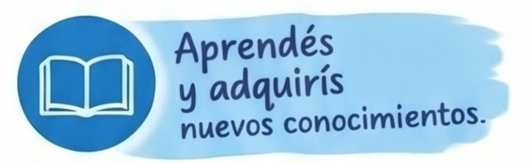
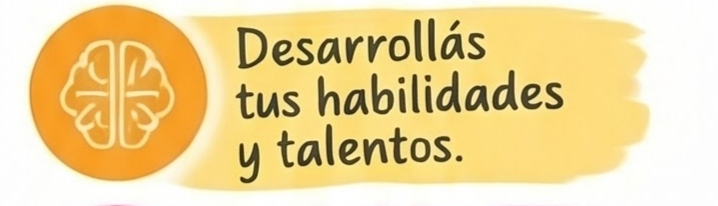
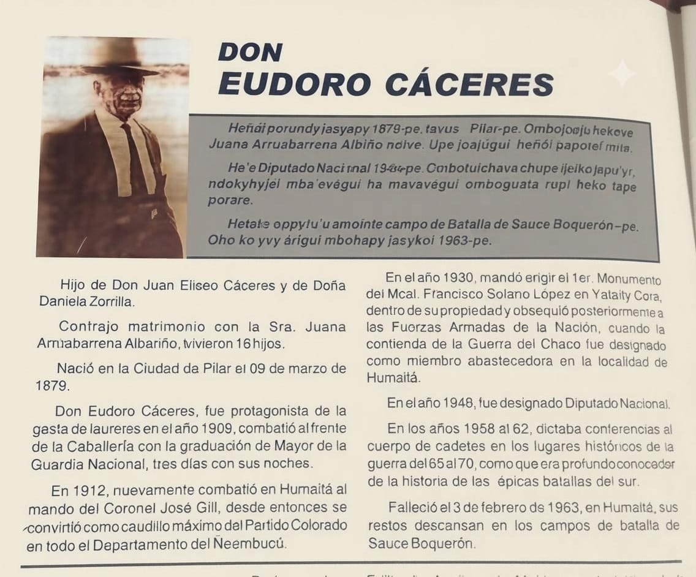
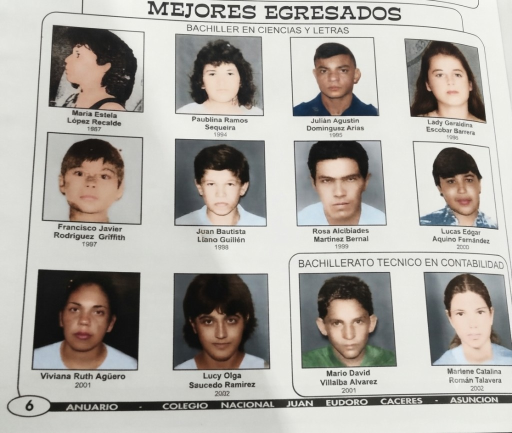
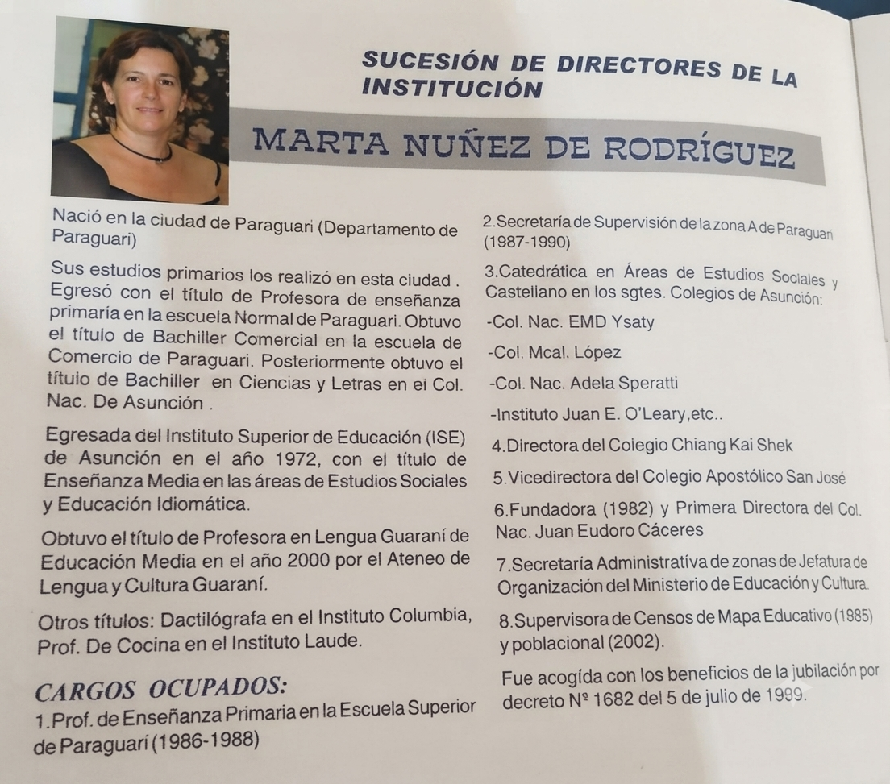
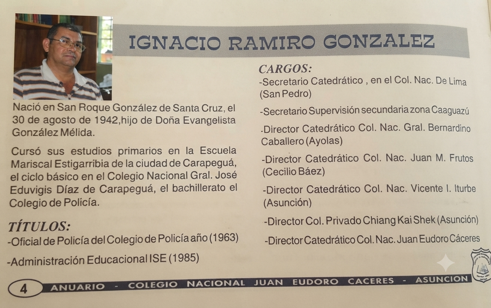
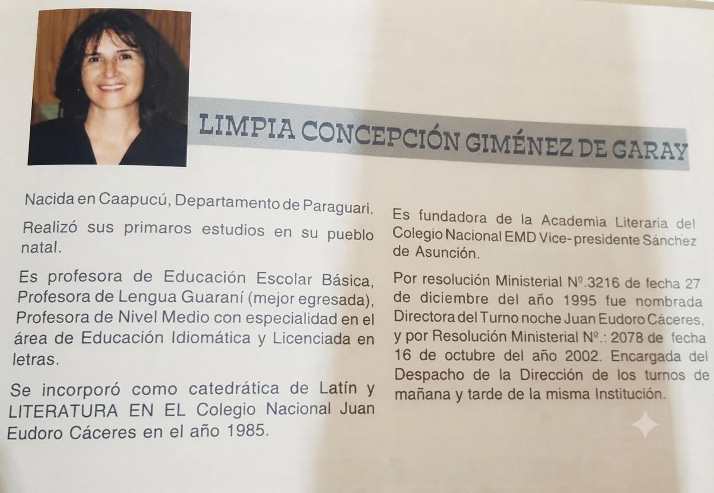
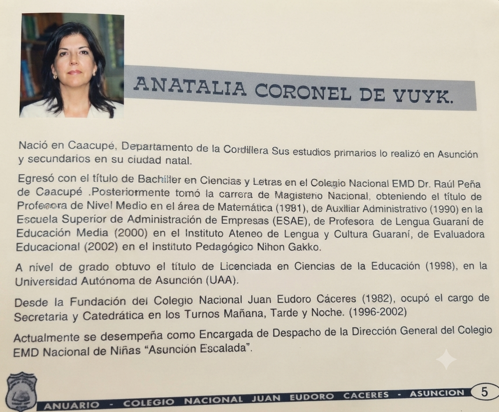

Misión
Nuestra misión es formar ciudadanos íntegros, con excelencia académica y valores éticos, preparados para enfrentar los desafíos de la sociedad moderna y contribuir activamente al desarrollo de nuestro país.


Asunción, Paraguay
Aprender, compartir y construir el futuro.
01 Nuestra esencia
Una comunidad que crece con conocimiento, valores y compromiso.
Nuestra misión es formar ciudadanos íntegros, con excelencia académica y valores éticos, preparados para enfrentar los desafíos de la sociedad moderna y contribuir activamente al desarrollo de nuestro país.
Ser una institución educativa líder y de referencia a nivel nacional, reconocida por su innovación, calidad humana y compromiso inquebrantable con la educación de las futuras generaciones.
02 Nuestras raíces
Conocer nuestras raíces es parte de lo que somos.

Pilar, 9 de marzo de 1879 · Humaitá, 3 de febrero de 1963
Hijo de don Juan Eliseo Cáceres y doña Daniela Zorrilla, nació en la ciudad de Pilar. Contrajo matrimonio con Juana Arruabarrena Albariño, con quien tuvo 16 hijos.
En 1909, fue protagonista de la gesta de laureles. Con el grado de mayor de la Guardia Nacional, combatió al frente de la caballería durante tres días y sus noches.
En 1912, volvió a combatir en Humaitá bajo el mando del coronel José Gill. Desde entonces, se convirtió en un destacado caudillo del Partido Colorado en el departamento de Ñeembucú.
En 1930, mandó erigir el primer monumento al mariscal Francisco Solano López en Yataity Corá, dentro de su propiedad, y posteriormente lo obsequió a las Fuerzas Armadas de la Nación. Durante la Guerra del Chaco, participó en tareas de abastecimiento en la localidad de Humaitá.
En 1948, fue designado diputado nacional. Entre 1958 y 1962, dictó conferencias al cuerpo de cadetes en lugares históricos de la guerra de 1865 a 1870, compartiendo su profundo conocimiento de las batallas del sur.
Falleció el 3 de febrero de 1963 en Humaitá. Sus restos descansan en los campos de batalla de Sauce Boquerón.
03 Aprende con nosotros
Conoce la Educación Escolar Básica y los énfasis del Nivel Medio.
04 Talento de nuestra comunidad
Personas que forman parte de nuestra trayectoria.

05 Un legado compartido
Reconocemos a quienes acompañaron el crecimiento de nuestra institución.

Fundadora y primera directora del colegio en 1982. Docente de Estudios Sociales, Educación Idiomática y Lengua Guaraní, con trayectoria en dirección y supervisión educativa.

Director y catedrático del Colegio Nacional Juan Eudoro Cáceres. Se formó en Administración Educacional en el ISE y dirigió diversas instituciones del país.

Licenciada en Letras y profesora de Lengua Guaraní. Se incorporó al colegio en 1985; fue nombrada directora del turno noche en 1995 y encargada de la dirección de mañana y tarde en 2002.

Licenciada en Ciencias de la Educación y profesora de Matemática y Lengua Guaraní. Integró el colegio desde su fundación en 1982, desempeñándose como secretaria y catedrática.
06 Nuestra comunidad
Conoce a quienes guían nuestra comunidad educativa.

Profesional de la educación con más de 16 años de experiencia docente como catedrático en el área de Ciencias Sociales y una sólida trayectoria en gestión directiva.

La Lic. Florinda Echagüe Ruiz es una profesional de la educación con 30 años de trayectoria en el ámbito educativo. Es licenciada en Ciencias – Química por la Universidad Nacional de Asunción (UNA), con formación especializada en Gestión Pedagógica y Curricular, Aprendizajes Basados en Redes y Liderazgo Pedagógico.
Cuenta con amplia experiencia en dirección y gestión institucional, coordinación de proyectos educativos y acompañamiento a docentes y estudiantes. A lo largo de su trayectoria, se ha destacado por su compromiso con la calidad educativa, el trabajo en equipo, la convivencia escolar y el mejoramiento continuo de la comunidad educativa.
07 El equipo que te acompaña
Conoce al personal que acompaña el día a día del colegio.

Secretaria general

Prof. guía E.E.B. · T.M.

Secretario general

Prof. guía Nivel Medio · T.M.
08 Visítanos
Barrio San Pablo
Asunción, Paraguay
Haz clic en la imagen para abrir la ubicación del colegio en Google Maps.
Abrir en Google Maps Ver ubicación
Ver ubicación